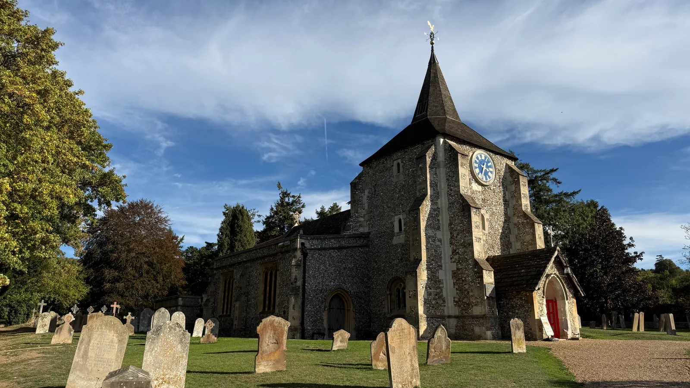

LIFE EVENTS · FUNERALS
Churchyard
Regulations
Practical guidance for burials, memorials and remembrance at St Michael’s.
Our churchyard is a place of great beauty and historical value. It is both a place of burial and remembrance and an important part of the historic parish.
The regulations help preserve the churchyard’s character and allow for practical care and maintenance. A burial or memorial does not transfer ownership of the grave space. Please discuss arrangements, memorial costs and ongoing care with the parish.
Need some guidance?
If you are making arrangements, or are unsure which guidance applies, please contact the parish. We’ll be happy to help.
THE GUIDANCE IN DETAIL
Churchyard guidance
Select a section below to read the key guidance.
The diocesan regulations describe a right to burial for parishioners, including those on the Church Electoral Roll, and parish residents, provided there is space and the churchyard has not been closed by Order in Council. Please ask the parish about availability and your circumstances.
- Permission for other people to be buried may be granted by the Incumbent, having regard to general PCC guidance.
- The Incumbent decides where burials take place. A grave space cannot be reserved informally: a reservation requires a Faculty, with the fee and maintenance contribution described in the diocesan regulations.
Based on: Diocesan regulations, introduction and regulations 7–11
Please speak with the parish before choosing or ordering a memorial. The Incumbent may authorise memorials within the types and classes permitted by the diocesan regulations; a memorial may be refused if it would be detrimental to the churchyard.
- Use Form CR1 to apply to the Incumbent where the proposed memorial falls within that authority.
- Written permission is required before any work is ordered or started.
- A memorial outside the Incumbent’s discretion or the regulations requires a petition for a Faculty. The diocesan regulations identify the Chancellor as the Faculty authority.
- Check the complete regulations for permitted materials, dimensions, inscriptions and secure fixing.
Confirm the applicable waiting period with the parish before planning work. The diocesan regulations say no memorial, except a small temporary wooden cross, should be erected within six months of a burial; the Incumbent may increase this to 12 months. Please do not assume that the shorter period applies locally.
View Form CR1Based on: Diocesan regulations 13–15 and 19–30
These points concern burial graves. The newer local requirements for ashes plots and the Garden of Remembrance are set out in the next section.
- Wreaths and cut flowers may be laid directly on a grave or placed in a vase authorised by the regulations. Remove flowers when withered, and remove vases that are no longer in use.
- Artificial flowers must be removed within two months. Figures, toys and other memorabilia must not remain permanently and must be removed within 12 months of burial or interment; the Incumbent or churchwardens may remove them if necessary.
- Bulbs and small annual plants may be planted within the previously excavated grave area. Plants or flowers may be placed in a removable sunken container, but must be kept tidy; otherwise the PCC may treat the grave as turf and mow over it.
- Trees and shrubs may be planted on or around a grave only with separate Faculty permission.
- Where a built-in vase has been unused for 12 months or more, the PCC may insert a matching stone stopper.
Based on: Diocesan regulations 31–32 and 44
For the Garden of Remembrance and ashes plots, please follow the parish regulations revised March 2026. Applications for interment of ashes must be made to the Incumbent, who decides the place of interment. The parish regulations describe parishioners’ right to interment; for non-parishioners it requires a connection to the parish and the Incumbent’s consent.
- Ashes should normally be buried without their container. The Incumbent may allow a casket or urn if it is biodegradable. The diocesan regulations do not permit scattering.
Garden of Remembrance
- The Garden of Remembrance provides for interment of ashes when they are not interred in a family grave. A maximum of two family members may be interred in each plot.
- Faculty has been granted for a bronze plaque available from the church, measuring 5 × 3 inches and including the deceased’s name and dates.
Ashes plots in the churchyard extension
- An area of the churchyard extension is set aside for ashes, with a maximum of four family members in each plot.
- A small upright headstone is permitted under the Faculty. Allow six months after interment for ground settlement before placing it.
- The maximum above-ground dimensions are 55 cm wide × 45 cm high × 7.5 cm deep. The headstone must be rectangular or slightly rounded on top, with black incised writing, in weathering natural stone or light grey marble without a polished or reflecting finish.
- Permission must be sought from the Incumbent on Form CR1. Obtain written permission before ordering or starting work. The complete document specifies inscriptions, prohibited features and secure fixing.
Flowers and decorations on ashes plots
- Keep plots free of additional decorations that encroach on neighbouring plots. Loose-laid flowers are preferred; a maximum of one plant or small vase of flowers in a non-plastic container is permitted.
- Do not wrap flowers or pots in cellophane. Remove flowers and plants when withered and remove vases no longer in use. Artificial flowers are discouraged and will be removed after two months.
- Figures, characters, toys and other memorabilia must not remain permanently on or around a plot. Remove them within 12 months of interment; the Incumbent or churchwardens may do so if they are not removed in good time.
Based on: Local regulations revised March 2026, sections 1–5; diocesan regulation 37 on scattering
Burials and interments of ashes are recorded in the Burial Register. For ashes, the names of those whose remains are interred and the places of interment are recorded.
A memorial Book of Remembrance is kept in the church. Entries may be made with the Incumbent’s approval by a calligrapher approved by the Incumbent.
Based on: Diocesan regulations 12 and 36; local March 2026 regulations 1.3–1.4